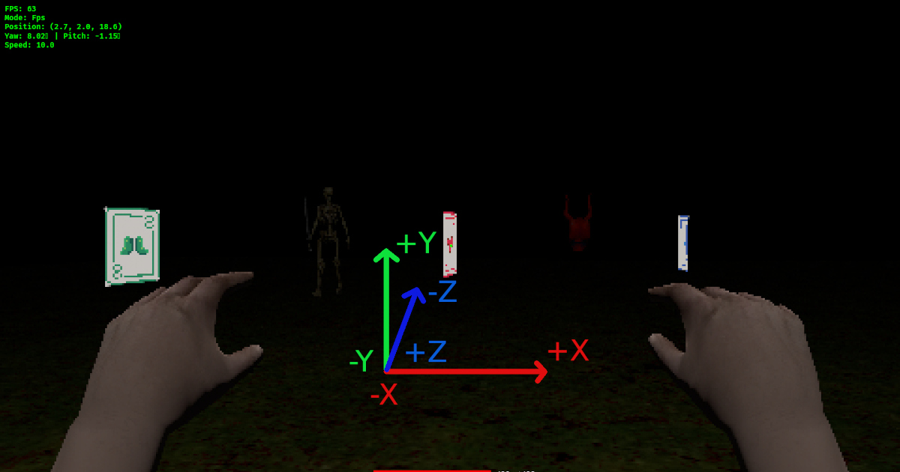
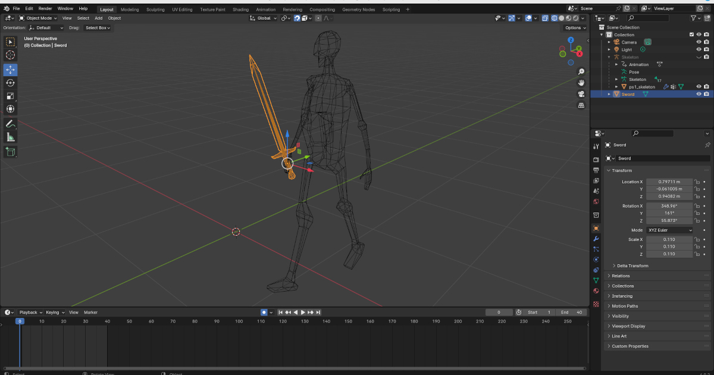

Ce projet est un prototype FPS inspiré de Devil Daggers & les vieux Elder Scrolls
Le développement a été réalisé en Rust et j'ai utilisé le Bevy engine pour le rendu. Je souhaitais apprendre ce langage, popularisé par la fondation Mozilla et mis en avant dans les tendances tech 2025/2026.
Contrairement au C++, Rust détecte la majorité des bugs à la compilation, c'est sa grande force.
Le projet comporte quelques erreurs d'architecture (ECS pattern). Une grande partie du temps a été consacrée à la compréhension et à la conception "moteur" : environ 80% sur le rendu, 20% sur le gameplay — qui reste la partie la plus fun.
Pour la modification des assets 3D, j'ai utilisé Blender & Gimp pendant le projet.
Au départ j'ai "videcodé" le projet, souhaitant tester Claude code.
Cependant Claude a vite montré certaines limites. Il ne comprend pas toujours bien les problématiques liées à l'espace 3D, notamment les positions, rotations et décalages. Il ne perçoit pas les interactions spécifiques du moteur et souvent il a plusieurs versions de retard, ce qui pousse Claude à boucler sur Google en recherchant la bonne commande.
De nombreuses choses lui échappent, notamment lorsqu'il s'agit de debugging complexe en 3D. Trop de temps a été perdu à essayer de corriger des erreurs avec lui. Il est souvent plus efficace de comprendre et développer ses propres solutions. Au final j'ai terminé le projet les yeux dans la doc.
Note : La version WebAssembly a été abandonnée. L'utilisation du PixelatePlugin, un shader de post-processing custom basé directement sur l'API de rendu de Bevy, n'est pas compatible ou fiable sur wasm/WebGL2.
Ce proto rend un hommage particulier à David Gamecodeur, pour toute son inspiration pédagogique.

